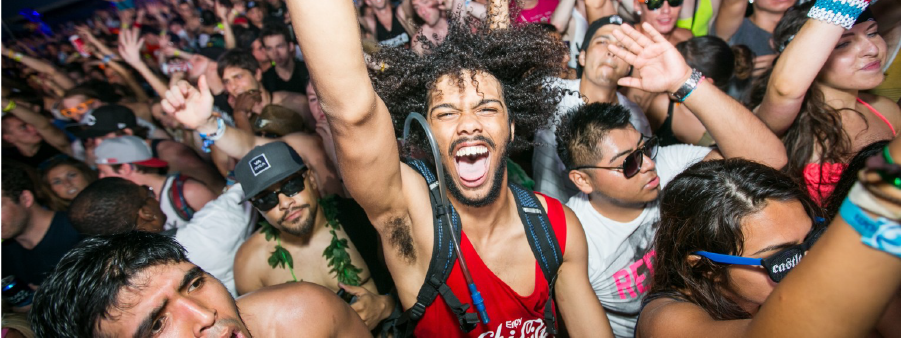

surviving your first music festival

Items you will need to survive the festival
1
water bottle or camelback
Bring these items to store water and be able to refill throughout the day and night!
Stay hydrated!
2
small bag / fannypack
Bring a small bag for your keys, phone, I.D and some money to spend throughout the night. This is also for other essential items.
3
sunblock
If you are going to a day festival during the summer especially you are going to want to bring sunblock to keep from getting sunburn. You don't want to get a burn after the first day because you will be bumping in to a lot of people going through the crowds.
4
food!
Bring some canned food or snacks if you are camping or for your hotel room. Saves on spending too much money of fast food and food from the venue if you can replenish your body with food you brought with you.
5
cellphone
Bring your phone just in case you need to call your friends at the end of the festival day to find where they are, or to take photos and videos of your experiences throughout the night. Always a good thing to have something to remember your time by.